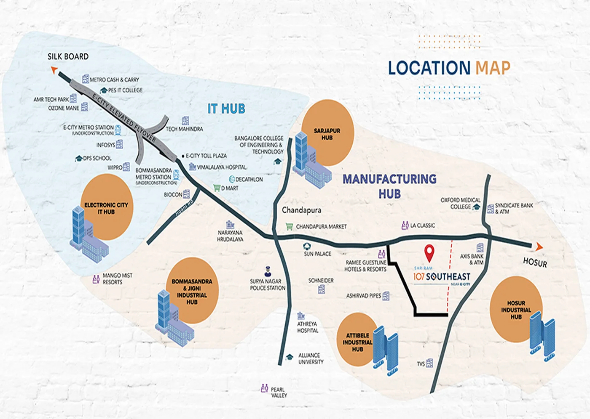

Electronic City has been one of Bangalore's most reliable real estate stories for two decades, but that reliability has a cost: land inside the Electronic City core is expensive, and getting more so. Attibele, sitting further down Hosur Road on what we're calling the "Electronic City South" corridor, is where a growing number of buyers are looking instead, chasing a meaningfully lower entry price while staying close enough to the same employment base to keep the commute realistic. This guide looks at what's actually driving that shift, what the real trade-offs are, and how to evaluate whether this corridor fits your own investment thesis.
1. Where Is Attibele, Exactly?
Attibele sits off Hosur Road in South East Bangalore, roughly 15 minutes from Electronic City via the E-City Elevated Flyover, which connects onward to Silk Board. It's close enough to the state border that Hosur itself, just across into Tamil Nadu, is also within easy reach via Hosur Road, giving the corridor a slightly unusual dual-state commuting catchment that few other Bangalore micro-markets share.
2. The Core Investment Thesis: Lower Entry Price, Shorter Commute Than It Looks
The thesis for this corridor is straightforward and worth stating plainly rather than dressing up: Electronic City's own land is expensive because two decades of IT-driven demand have already been priced in. Attibele, a further 15 minutes down Hosur Road, hasn't seen the same price appreciation yet, which means a buyer can access a meaningfully lower per-square-foot rate for a comparable home while still commuting to the same IT campuses in a reasonable amount of time via the E-City Elevated Flyover. This is the same basic pattern that played out in plenty of now-established Bangalore corridors a decade or more ago: a slightly further-out location absorbing overflow demand from an already-expensive core, at a lower entry price, before its own price catches up.
What makes this corridor specifically interesting rather than just "cheaper and further" is that it isn't purely dependent on IT overflow demand. It also sits inside a genuine industrial employment belt.
3. Two Demand Drivers, Not One: IT and Industrial
Most Electronic City-adjacent micro-markets lean entirely on the IT workforce for rental and resale demand. Attibele's proximity profile is broader:
- IT and tech employment: Electronic City IT Hub, Infosys, Wipro, Tech Mahindra, Biocon, AMR Tech Park and PES IT College, all within the ~15-minute commute band via the E-City Elevated Flyover
- Industrial employment: the Attibele Industrial Hub itself, sitting essentially on the doorstep, plus the Bommasandra & Jigni Industrial Hub, the Hosur Industrial Hub just across the Tamil Nadu border, the Sarjapur Hub, and the broader Chandapura manufacturing belt
This matters for an investor because it means rental and resale demand for a home here isn't a single-industry bet. If IT hiring in Electronic City slows in a given cycle, the corridor still has a meaningful base of industrial and manufacturing employment to fall back on, and vice versa. A purely IT-dependent micro-market doesn't have that same natural hedge.
4. Infrastructure: What's Already There, What's Coming
Connectivity into the corridor today runs primarily through the E-City Elevated Flyover, which links Attibele's stretch of Hosur Road directly to Silk Board, one of Bangalore's most important traffic junctions, and through Hosur Road itself for direct access toward Hosur in Tamil Nadu. Two additional pieces of infrastructure are currently under construction and worth tracking rather than assuming complete: the E-City Metro Station and the Bommasandra Metro Station. Neither is operational yet, so an investor should treat metro access as a medium-term upside rather than a current-day amenity, but both would materially improve last-mile connectivity into the corridor once complete.
On the social infrastructure side, the corridor already has DPS School, Alliance University and Bangalore College of Engineering & Technology for education, and Vimalalaya Hospital, Oxford Medical College and Athreya Hospital for healthcare, alongside everyday retail anchors like D Mart, Decathlon and Chandapura Market. This is a reasonably complete, if not yet fully mature, social infrastructure base, comparable to where several now-established Bangalore corridors stood five to seven years into their own growth cycle.
5. Pricing: What a Rupee Buys Here vs Electronic City Proper
While we don't have a like-for-like published price list for Electronic City's own core inventory to cite directly, the general pattern across Bangalore's IT-adjacent corridors holds here too: every additional 10-15 minutes of distance from an expensive employment core typically buys a meaningful reduction in per-square-foot pricing, often in the 15-30% range depending on the specific corridor and how mature its own infrastructure already is. Shriram 107 SouthEast in Attibele, for instance, offers 2 BHK apartments of roughly 698-752 sq.ft starting from ₹57 Lakhs onwards, and 3 BHK apartments of roughly 914 sq.ft starting from ₹75 Lakhs onwards, both figures that would be difficult to match for comparable unit sizes inside the Electronic City core itself.
The honest framing for a prospective investor is that this is a value-for-distance trade, not a free lunch: you are paying less because the location is objectively further from the employment center, and that gap in price should be weighed against the real, ongoing cost of a longer daily commute if you intend to live here yourself, or against the effect a longer commute has on your achievable rental pool if you intend to lease it out.
6. Risks and Realistic Caveats
No growth-corridor thesis is risk-free, and it's worth being direct about what could go wrong here. First, the metro stations currently under construction have no confirmed completion date in the source material available to us, infrastructure timelines in Bangalore have a well-documented history of slipping, and a buyer should not price in metro access as a certainty for any specific year. Second, because much of the corridor's residential inventory, including Shriram 107 SouthEast's Phase 3, is still under construction, buyers are taking on standard under-construction risk (construction delays, cost escalation) on top of the locational bet. Third, "emerging corridor" theses can take longer to play out than initial marketing suggests; a five-to-seven-year horizon is a more realistic planning assumption than a two-to-three-year one for meaningful price appreciation to materialise.
7. A Concrete Project to Evaluate: Shriram 107 SouthEast
For readers who want to move from thesis to a specific, evaluable option, Shriram 107 SouthEast is currently the project we track most closely in this corridor. It's a 22-tower, 2,200+ unit community by Shriram Properties (in joint venture with Garden City Realty) spread across 19 acres, with an unusual structural advantage for an under-construction purchase: two of its three phases (Phase 1 and Phase 2) have already received their Occupancy Certificate and are fully delivered and occupied on the same site, giving a Phase 3 buyer a rare chance to inspect the developer's actual, completed work before booking. We've covered the project's pricing, floor plans and RERA status in full in our dedicated Shriram 107 SouthEast review, and the specific differences between its three phases in our Phase 3 vs Phase 1 & 2 comparison.
Our Honest Assessment
Attibele and the wider Electronic City South corridor has a genuinely credible investment thesis: a real, short commute to one of Bangalore's largest employment hubs, a second, non-IT demand driver from established industrial hubs on its doorstep, and infrastructure (an already-functioning elevated flyover, plus two metro stations under construction) that's moving in the right direction rather than standing still. The pricing gap versus Electronic City proper is real and, on the evidence available, meaningful enough to matter for a value-conscious buyer.
That said, this remains an emerging rather than an established corridor, and readers should treat it that way: budget for a five-to-seven-year horizon rather than a quick flip, don't price in the under-construction metro stations as a certainty, and apply the same under-construction diligence to any project here, including confirming RERA registration and current construction progress directly, that you would anywhere else in Bangalore. For a specific, currently-selling option in this exact corridor, enquire about Shriram 107 SouthEast and we'll walk you through the current pricing and availability.